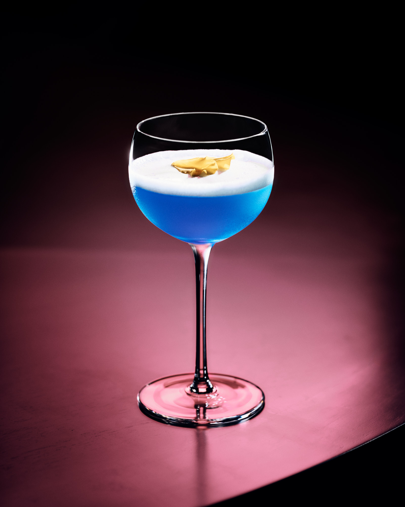
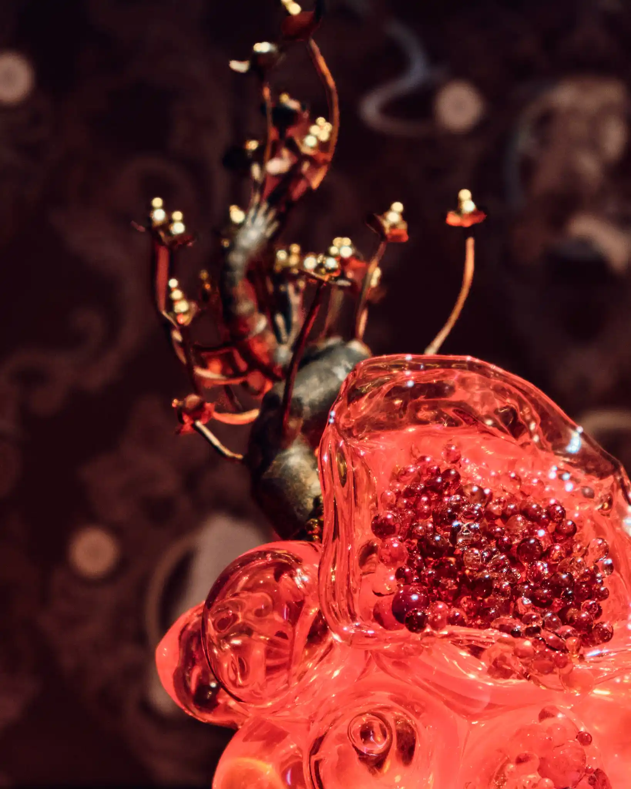
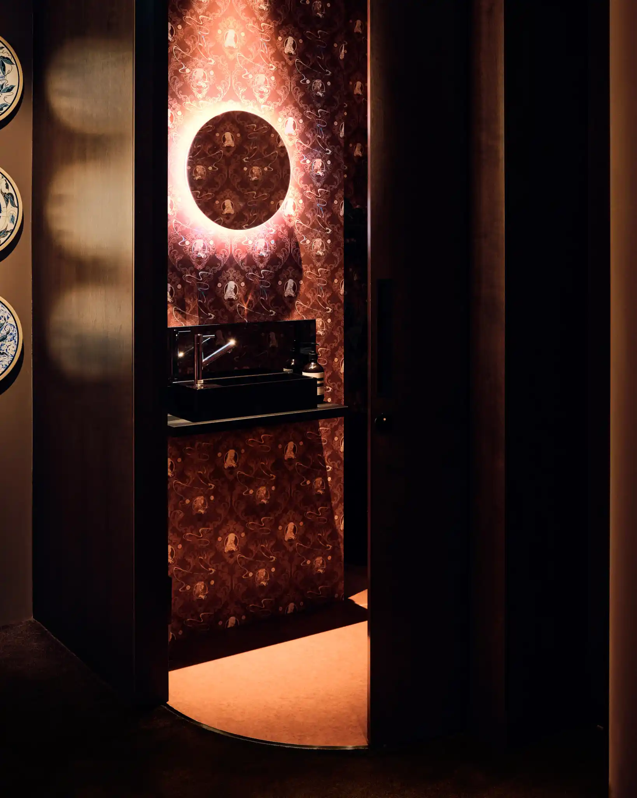
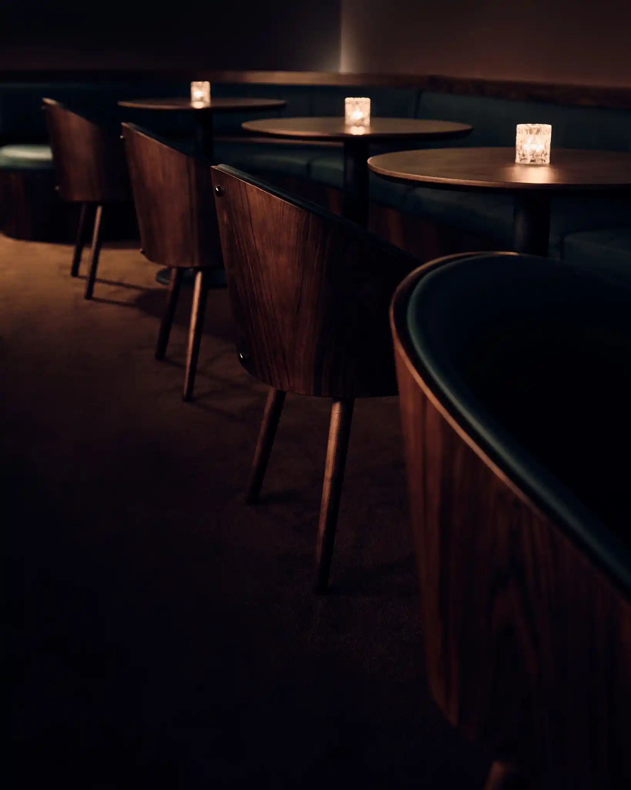
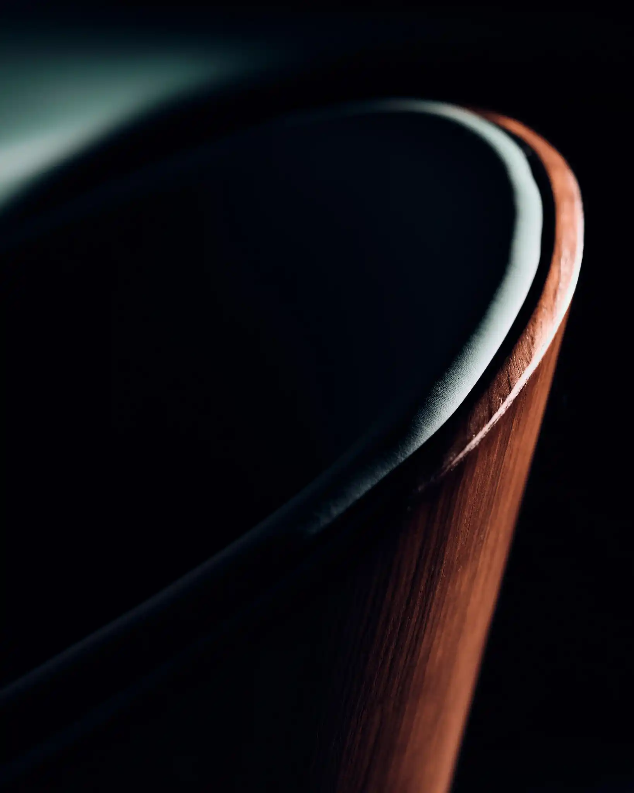

Craft cocktails, avant-garde contemporary art, and a curated sonic landscape converge at The Gallerist.
Craft cocktails, avant-garde contemporary art, and a curated sonic landscape converge at The Gallerist.
An immersive lounge driven by Taisho-era Art Deco, elegance, and cross-cultural vanguard.
Curated Music

Craft Cocktails

Curated Art



